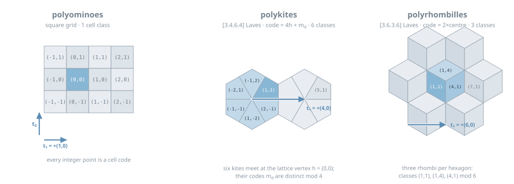
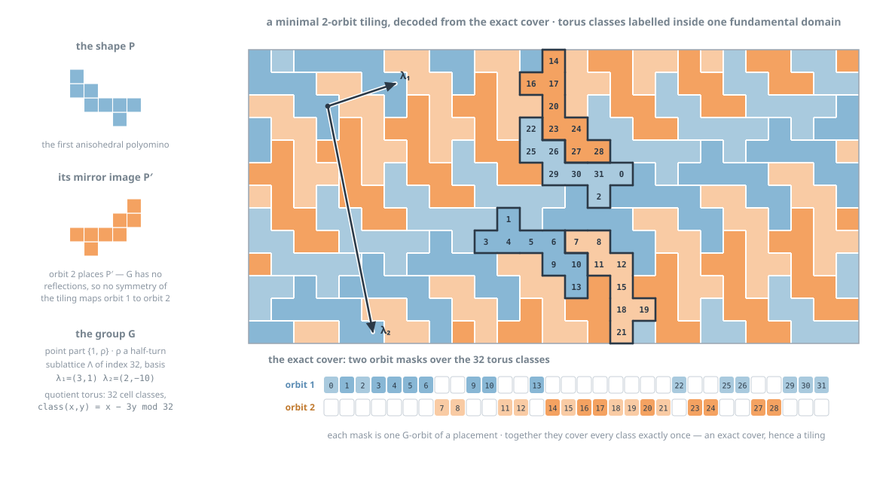

Methods
Every statement on this site is of one of two kinds: this shape has a tiling with k orbits, backed by an explicit tiling, or this shape has no tiling of such a kind, backed by an exhaustive search. This page explains how both are produced, and why they can be trusted.
Grids as data
Nothing in the engine knows about squares or hexagons. A grid is described by integer data: each cell is a point of ℤ² (its code); a translation lattice acts on codes by addition, with finitely many cell classes modulo the lattice; each symmetry of the grid acts on codes as an integer affine map; and each cell has a polygon with integer vertices. Adjacency is derived from the polygons, never entered by hand. Before a grid is used, a validator checks that the polygons exactly partition a fundamental domain, that adjacency is symmetric, and that every claimed symmetry maps cells to cells, preserves adjacency and composes correctly.
Supporting a new grid means writing that description — typically fifty lines — and passing the validator. All fourteen grids here, including those with glide symmetries and those with two shapes of cell, run through the same code. One-sided classification is the same grid with its reflections deleted.

Enumerating shapes
Shapes are generated by Redelmeier's algorithm, which grows a shape one cell at a time and visits each shape, up to translation, exactly once. A shape is kept if it is the canonical representative of its class under the grid's rotations and reflections. Shapes enclosing a hole are recognised by flood fill. The enumeration splits into independent branches, so a row can be streamed through a pool of workers without ever holding all its shapes in memory. Counts agree with the OEIS wherever a sequence exists.
Periodic tilings as exact cover
This is the central idea. Suppose a shape has a periodic, grid-aligned tiling with symmetry group G. The translations in G form a sublattice Λ of the grid's lattice, so the cells of the plane, taken modulo Λ, form a finite torus. A copy of the shape projects to a set of torus cells, and the copies obtained from it by G project to a larger set, its orbit mask. Then:
A tiling with symmetry group G and k orbits of tiles exists exactly when k orbit masks partition the torus.
So for a fixed group the question is a finite exact-cover problem, and the isohedral number is the smallest k over all groups. The groups can be listed: a subgroup of the grid's symmetry group is determined by which linear parts occur, a sublattice invariant under them, and a translational offset for each linear part satisfying a cocycle condition. These are enumerated up to conjugacy for each sublattice index. Simple counting bounds which indices can occur for a shape of n cells and a tiling of k orbits, so the search is finite and complete: if no group yields a cover with at most k orbits, no such tiling exists.
Tilings by translation alone, and by translations and half-turns, are found first by a direct special case of the same idea.

Proving that a shape does not tile
Failing to find a tiling proves nothing. Non-tiling is proved by a separate argument, due in this form to Myers, in escalating stages.
First list the possible neighbours: placements of a second copy touching the first without overlap and without enclosing a pocket that no copy could fill. Then prune: a neighbour is impossible if, with it in place, some cell next to the central copy can no longer be covered. Repeat to a fixed point. If some cell next to the shape cannot be covered at all, the shape is a non-tiler; most non-tilers fall here. Next enumerate the complete rings of neighbours (coronas) and discard neighbours that occur in none. Finally, for what survives, search for a surround of depth d: a patch in which the central copy and every copy within d − 1 steps of it is completely surrounded. A tiling would contain such a patch around every tile, so if none exists the shape does not tile.
The pruning steps assume the arrangement extends to a tiling of the whole plane. That makes them sound for proving non-tiling and unsound for computing Heesch numbers, since a finite surround may use a neighbour that no tiling could. Heesch numbers on this site are computed without pruning.
Sweeps and probes
A sweep classifies every shape of one size with bounded effort: holes; translation and half-turn tilings; the non-tiling proof to depth three; exact cover for k up to four (more for small rows). Whatever it cannot settle is recorded as unresolved, with the shape. A probe then takes each unresolved shape much further: surround search to greater depth, then the k-orbit search up to k = 8 and beyond. Probe verdicts are kept in a separate ledger; the tables on this site fold the two together. 566 shapes have needed a probe: 494 proved non-tilers, 69 with isohedral number five or more, and the three aperiodic cases.
SAT encodings and checkable proofs
The two expensive searches — does a depth-d surround exist, does a cover with at most k orbits exist — are both re-encoded as Boolean satisfiability and given to a conflict-driven solver. Learned clauses let the solver reuse each local contradiction instead of rediscovering it in every branch; a surround question that defeated ninety-five million nodes of backtracking is answered in a fifth of a second.
For surrounds there is one variable per candidate placement, at most one placement per cell, a conflict clause for each incompatible touching pair, and level variables forcing every copy near the centre to be surrounded. For covers there is one variable per orbit mask, exactly one mask per torus cell, and a cardinality bound on the number of masks, so one unsatisfiable query excludes every k up to the bound for that group.
A satisfying assignment is decoded into placements and re-verified geometrically without
reference to the solver. An unsatisfiable answer can be exported as a DRAT proof and
checked by drat-trim, an independent program. The proofs kept in the
repository cover the star's fourth-ring refutation and five heptahex non-tiling proofs.
Marked tiles
For edge markings, a cover of the torus is necessary but no longer sufficient: the marks on every pair of touching tiles must also fit. Covers are therefore decoded into actual placements, by the group action, and every touching pair checked in the plane. Non-tiling of a marked tile cannot be shown by surrounds, and is shown instead by a transfer-matrix argument on strips of bounded width, by exhaustive search of a disc, or by SAT on a rectangular patch.
How the results are checked
The claims rest on agreement between things that share as little as possible.
- Published tables. All 61 rows in common with Myers's tables agree in every column (18 890 736 shapes). His method searches tile by tile and never enumerates groups; this one enumerates groups and never searches tile by tile.
- Two engines on the same shapes. Myers's class-based search was also reimplemented here from his description. On all 1 762 free polyominoes of 7 to 9 cells it returns the same isohedral number as the exact-cover engine in every case.
- SAT against backtracking. Each SAT encoding was validated against the corresponding backtracking search in both directions before being relied on, and record values were re-derived both ways: the nine-orbit 11-hex and the ten-orbit chevron each have every smaller k excluded by exact cover as well as by SAT.
- Compiled against reference. The compiled kernels reproduce the pure-Python reference bit for bit, including the order in which solutions are found; the test suite runs both.
- Certificates. For every shape with isohedral number three or more, a simplest tiling is stored explicitly and checked by a separate program that knows nothing about groups or exact cover: the tiles must cover the plane exactly once, and the tiling's full symmetry group, found by brute force, must have exactly the claimed number of orbits. All 2 022 pass. Tilings with four or more orbits are also drawn in the galleries.
- An oracle for marked tiles. Positive results for marked tiles are re-derived by a brute-force program that computes the full symmetry group of the claimed tiling and counts its orbits directly.
Mistakes made and caught
The engine has been wrong several times. Each error was found by one of the checks above or by someone looking at a picture, and each is the reason one of those checks exists.
- Budget exhaustion read as success. A surround search that hit its node limit was reported as having found a surround. Fixed by separating “found”, “exhausted” and “gave up” everywhere.
- Phantom marked tilings. The check that touching marked tiles fit looked only at a fixed window of translates, which a skewed lattice basis can escape. A figure with two bumps meeting gave it away.
- Lost marked tilings. Placements were identified by the cells they cover, which confuses a symmetric shape with its mirror image when the marks differ. Genuine tilings were rejected and isohedral numbers inflated; a “four-orbit” tiling that looked isohedral gave it away, and the brute-force oracle confirmed it.
- Self-overlapping orbits. On a small torus a copy can wrap around and overlap its own images in the plane while its mask still looks valid. This can only produce false tilings, never false exclusions; all stored examples were re-derived with such orbits forbidden and none changed.
- Proofs about the wrong tile. A non-tiling prover for marked tiles silently dropped the marks and “proved” non-tiling for hundreds of tiles with known tilings. The standing test since: nothing may prove non-tiling for a tile that has a tiling.
- A counting test that asked too much. On grids with more than one kind of cell, a tile must contain the kinds in the grid's proportions. The test also demanded whole multiples, which is not required, and so condemned some one-sided polydrafters that tile. It was caught when a shape known to tile was reported a non-tiler after being moved to a finer grid. Every stored row on the one affected grid was recomputed and none changed.
- A congruence test blind to mirror images. The comparison of polygons across grids matched rotations but never reflections, so the count of distinct polygons among the hard tiles was too high.
- Heesch numbers that were only bounds. Probe depths from the pruned search were published as exact Heesch numbers. They are lower bounds; the table on the hard shapes page is recomputed without pruning.
- Prose out of step with data. The previous version of this site was edited by hand and several totals drifted from the data. The site is now generated: every number is computed at build time, and the build fails on any inconsistency.
Performance
Classification of one shape takes about half a millisecond on the easier grids, some hundred times faster than the first version. The gain came mostly from algorithmic changes — cheaper tests first, a perimeter-only pocket check, caching work shared across groups and orbit counts — and from two compiled kernels for the inner loops. Rows of three to five million shapes take thirty to seventy minutes on a dozen cores. A table-driven C enumerator generates over a hundred million shapes per second per core; it is not yet fused with classification, which is the main remaining cost.
Past about five million shapes per row, exhaustive sweeps stop being the efficient way to find new hard tiles: see open problems.
Reproducing
pip install -e '.[dev]' # builds the compiled kernels
pytest # includes the comparison with Myers's tables
polyform classify square 9 # recompute one row
polyform shape kite '[[-2,1],[-1,-1],[1,-3],[1,-2],[2,-5],[2,-3],[2,-1],[3,-2]]'
polyform probe --family hex # settle anything left unresolved
python site/build.py # rebuild this site from data/